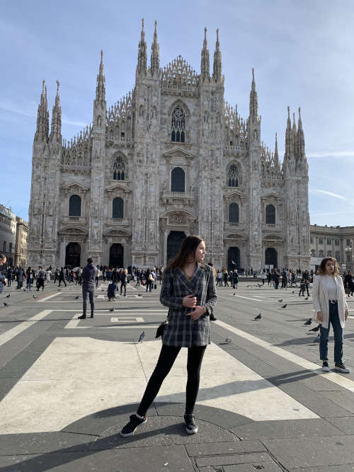

Mein Name ist Helen Ziegler.
Für mein Studium der OnlineMedien (OMB) bin ich vor ein paar Wochen nach Furtwangen im Schwarzwald gezogen.
Das Studium kombiniert meine Hobbies perfekt, weshalb ich froh bin diesen Studiengang gefunden zu haben.
Das Fotografieren und das Schreiben gehören zu meinen liebsten Hobbys. Aber auch die Filmografie fasziniert mich.
Auf Reisen kombiniere ich meine Hobbies gerne mit schönen Urlaubsfotografien oder -videos. Aber auch das beSchreiben des Erlebten findet dabei Platz.
Eine kleine Auswahl des Outputs meiner Hobbies finden Sie hier:
Startseite